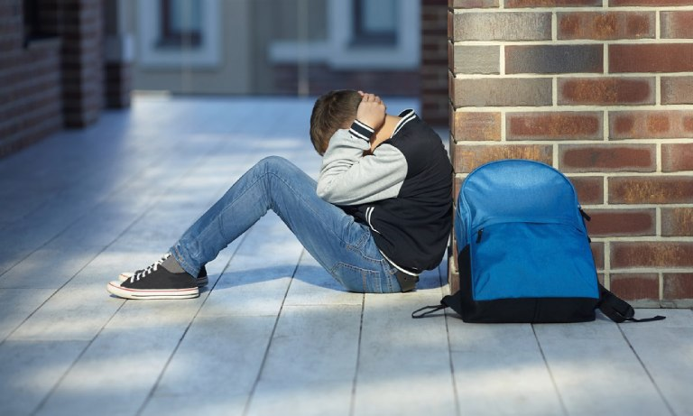

Giới Thiệu
Bạo lực học đường là một vấn đề xã hội nghiêm trọng ảnh hưởng đến môi trường giáo dục và sự phát triển của học sinh.
Bạo lực học đường là hành vi ngược đãi, đánh đập, bạo hành; làm tổn hại đến sức khỏe, thân thể; sỉ nhục, lăng mạ đến danh dự và nhân phẩm; tẩy chay, cô lập, ruồng rẫy và những hành động gây ảnh hưởng nặng nề tới sức khỏe tinh thần và thể chất của bạn học trong các cơ sở giáo dục.
Hiện nay, tình trạng bạo lực học đường tiếp tục có dấu hiệu gia tăng và diễn biến phức tạp trong các môi trường học tập trên thế giới. Theo CDC (Trung tâm Kiểm soát chấn thương) ở Hoa Kỳ, bạo lực học đường là một phần của bạo lực thanh thiếu niên, xoay quanh các nhóm tuổi từ 6 đến 24 tuổi.
Tình trạng ở Việt Nam
Bạo lực học đường hiện đang là một vấn đề vô cùng nghiêm trọng ở Việt Nam. Theo Bộ Giáo dục và Đào tạo, chỉ trong một năm học đã xảy ra khoảng 1.600 vụ đánh nhau giữa học sinh trong và ngoài nước. Theo một số thống kê, khoảng 5.200 học sinh đã cãi nhau và 11.000 học sinh bị đuổi học vì xô xát. Những con số này cho thấy tình trạng bạo lực trong học đường đang là vấn nạn với hậu quả ngày càng gia tăng ở các cấp học, lớp học.
Theo báo cáo của Tổng cục Phòng, chống tội phạm, hơn 25.000 vụ án hình sự liên quan đến 42.000 đối tượng đã được xử lý từ năm 2013 đến 2015, hơn 75% trong số đó là thanh niên, học sinh. Nghiêm trọng hơn, tội phạm ngày càng gia tăng, hành vi bạo lực cũng đa dạng hơn và độ tuổi phạm tội cũng được trẻ hóa đi rất nhiều. Các vụ giết người, cướp của, hiếp dâm,… ở độ tuổi học sinh, sinh viên cũng ngày càng nhiều. Điều đáng lo ngại, trên đây chỉ là những con số được báo cáo, còn có rất nhiều trường hợp trường học hoặc học sinh được che giấu để bảo vệ danh tiếng của trường.
Không chỉ mở đầu bằng hình thức đánh nhau mà một số học sinh khác còn bị tấn công tâm lý, điều này ảnh hưởng nghiêm trọng đến tư duy và suy nghĩ của những học sinh bị xâm hại sau đó.
Nguyên Nhân
- Từ chính bản thân học sinh:có thể nói, nguyên nhân chủ yếu dẫn đến bạo lực học đường là do tâm lý học sinh thay đổi thất thường ở lứa tuổi 12-17. Đây là thời điểm hình thành nhân cách của học sinh cùng với trí tuệ, nếu như không được dạy dỗ đúng cách thì tinh thần rất không ổn định, dễ bị lôi kéo và có cái tôi rất cao.
Ở giai đoạn này các em rất dễ học theo những điều xấu từ thế giới bên ngoài, dẫn đến nhiều việc đánh nhau trong học đường cũng là nguyên nhân dẫn đến bạo lực học đường ở Việt Nam. Cũng bởi vì tâm lý thay đổi thất thường, nhiều học sinh và giáo viên có đạo đức xuống cấp, có quan điểm sống khác biệt, xuyên tạc, biến thái,… rất dễ dẫn đến những hành vị bạo lực về tinh thần lẫn thể xác của người khác trong môi trường giảng đường.
- Môi trường gia đình:Do cách nuôi dạy con không đúng cách, cha mẹ thường quát mắng con cái, điều này ở Việt Nam cũng dễ dẫn đến bạo lực học đường. Trong xã hội phát triển như hiện nay, cha mẹ ít quan tâm đến con cái và một số người có xu hướng giảm căng thẳng và stress thông qua bạo lực gia đình đối với con cái của chính mình hoặc bạo lực đối với vợ hoặc chồng mình, những trường hợp bạo lực gia đình như vậy không phải là hiếm. Những hành động này có ảnh hưởng sâu sắc đến con cái sau này.
Thật không may, tình trạng này đang trở nên tồi tệ hơn trong một xã hội ngày càng hiện đại. Cấp 2, cấp 3 là thời điểm học sinh hình thành nhân cách, chỉ cần một ảnh hưởng xấu duy nhất có thể gây ra tác hại không thể khắc phục được cho gia đình và xã hội, hun đúc nhân cách sai lệch về giá trị sống, dẫn đến các vụ bạo lực học đường.
- Ảnh hưởng từ mạng xã hội:Một trong những nguyên nhân dẫn đến tình trạng bạo lực học đường hiện nay không thể không kể đến ảnh hưởng của môi trường văn hóa bạo lực như phim ảnh, sách báo, game bạo lực, đồ chơi bạo lực … Chúng ta có thể liệt kê ra một vài kênh Youtube có ảnh hưởng xấu đến lối suy nghĩ và cách hành xử của trẻ em như TIMMY TV, Thơ Nguyễn… Những hình ảnh này rất phổ biến trên mạng xã hội, khi được thanh thiếu niên nhìn thấy sẽ ảnh hưởng rất lớn đến tâm lý của các em sau này.
- Thiếu sự quan tâm của nhà trường:nguyên nhân của bạo lực học đường cũng có thể được đưa ra một phần là do hệ thống giáo dục trong nhà trường. Nhìn chung, giáo dục trong nhà trường mang tính hàn lâm, chịu ảnh hưởng nhiều của kiến thức văn hóa, chính trị của đất nước, ít tính ứng dụng và không quá chú trọng đến việc giáo dục nhân cách của học sinh.
Mặt khác, nhà trường đang có xu hướng đi chệch khỏi giá trị ban đầu khi theo đuổi cả vật chất và lối sống thực dụng nên cũng là một dấu hiệu đáng báo động góp phần làm gia tăng tình trạng bạo lực học đường.
Hậu Quả
Bạo lực học đường để lại nhiều hậu quả to lớn cho cả nạn nhân, gia đình và xã hội. Đầu tiên, phải kể đến ảnh hưởng của những người bị hại. Họ phải chịu nỗi đau về thể xác, nhẹ thì bầm tím còn nếu nặng hơn thì gây ra những thương tích và đáng buồn hơn là có thể cướp đi sinh mạng của họ, gây tổn thương to lớn cho gia đình và người thân.
Ngoài ra, bạo lực học đường còn làm ảnh hưởng đến tâm lý của nạn nhân. Họ sẽ có cảm giác sợ hãi, mất niềm tin vào mọi thứ xung quanh mình, áp lực tâm lý trong một thời gian dài làm họ không muốn đến trường.

Tiếp theo, bạo lực học đường còn để lại hậu quả cho gia đình và xã hội. Việc bạo hành không chỉ xảy ra giữa các học sinh với nhau, mà nhà trường và gia đình cũng sẽ mất rất nhiều thời gian, tiền bạc để giải quyết.
Nếu như bạo lực học đường không có cách để giải quyết triệt để thì về lâu dài sẽ gây ra một thế hệ bạo lực và vô cảm, đây sẽ không còn là vấn đề bạo lực bạo lực học đường mà sẽ là tệ nạn của toàn xã hội.
Giải Pháp
- Nhà trường cần có biện pháp giáo dục nâng cao nhận thức, ý thức của các em học sinh về hành động, hậu quả của hành động bạo lực. Với những học sinh cá biệt, có biểu hiện “đầu gấu” thì phải khoanh vùng, phối hợp cùng gia đình uốn nắn, giúp đỡ các em, lôi kéo các em vào các phong trào của lớp, tạo sân chơi lành mạnh làm cho các em đỡ nhàm chán.
- Hai là, các gia đình cần nhìn nhận lại cách giáo dục con trẻ, cần quan tâm tìm hiểu xem trẻ nghĩ gì, cần gì, xử sự như thế nào với bạn bè; cha mẹ hãy là bạn đồng hành với con cái, không nên tạo cho con cái một vỏ bọc quá cứng nhắc sẽ gây tâm lý ỷ lại, dựa dẫm, chơi bời, hưởng thụ; cần có thái độ phê phán, lên án những hành vi thô bạo và có những biện pháp xử lý có tính chất răn đe để làm gương cho người khác.
- Ba là, nhà trường cần chủ động trao đổi thông tin với gia đình các em học sinh và chính quyền địa phương để nắm tình hình, quản lý và giáo dục học sinh. Giáo viên chủ nhiệm cần nắm chắc diễn biến tư tưởng của học sinh, không để các hành vi tiêu cực, bạo lực xảy ra. Cần chú trọng việc dạy các môn học giáo dục công dân, giáo dục đạo đức, kỹ năng sống cho học sinh, xây dựng môi trường sư phạm thân thiện, trang bị cho học sinh nhận thức đúng đắn để các em có hành động đẹp, biết yêu thương, tôn trọng bạn bè.
- Bốn là, cả hệ thống chính trị cần nhận thức đúng đắn vai trò trách nhiệm của mình trong giải quyết vấn nạn bạo lực học đường, phát huy hết vai trò của mình trong công tác phòng ngừa tình hình bạo lực học đường, chủ động sử dụng tốt biện pháp vận động quần chúng, tăng cường tuyên truyền, vận động tại các khu dân cư, khi phát hiện mâu thuẫn cần kịp thời ngăn chặn, không để gây hậu quả xấu.
Thành Phần
Nguyễn Thu Trang
Trương Thị Anh